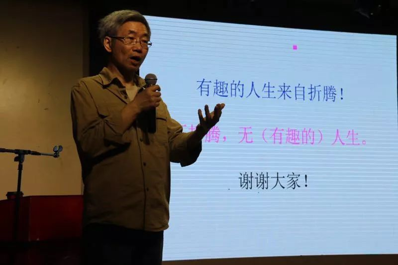
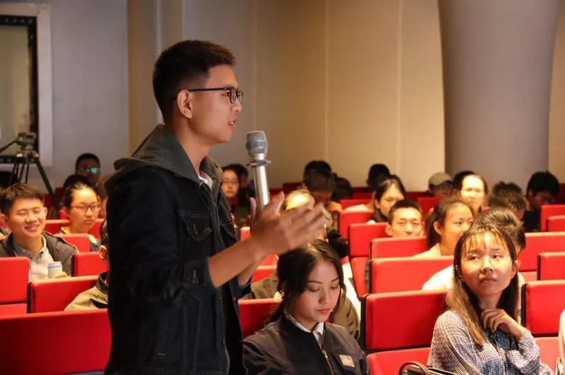

收录于合集
以下文章来源于复旦青年 ，作者复旦青年
复旦青年 .
这里是复旦大学团委《复旦青年》官方账号，定期推送优质报道和其他精彩内容。
你们有很多资本，至少比我当时有更多资本去折腾一些事情，我觉得折腾的人生是有趣的人生，那么我希望你们其中的某些人可以去折腾一些事情，这并不是说要求你现在一定要去创业，而是为了一种关怀，并不是为了钱和名利的折腾。
”
唐世平
教育部“长江学者”特聘教授、复旦大学特聘教授、陈树渠讲席教授、复旦大学复杂决策分析中心主任、“掌中星球”创始人。
研究领域为国际政治、社会科学哲学、 制度经济学等，是当今最有国际影响力的中国社会科学家之一。
复旦青年记者 胡佳璐 郭宇翔 主笔
复旦青年记者 高梦宇 编辑
“不管是对的还是错的，至少我觉得我过了一个有趣的人生。我觉得折腾的人生是有趣的人生，我希望你们其中的某些人可以去折腾一些事情，是为了一种关怀，并不是为了钱和名利的折腾。”
2019年10月14日晚20：20，复旦大学国际政治系教授唐世平在叶耀珍楼多功能厅为大家带来了由复旦国务团委学生会主办名为“不折腾，无人生”的新火茶会讲座分享。
唐世平在一个多小时的时间里，与大家分享了有关近日上线的微信小程序“掌中星球”的创业故事，同时向大家介绍了近期的学术研究成果。

▲ 分享现场
“掌中星球”——初生成长
窄窄的眼镜，卡其色的衬衫外套，深蓝色的牛仔裤搭配绿地黑面的运动鞋，被提前嘱咐“穿得正式一些”的唐世平特意穿了一身“非常不正式”的休闲装站上了演讲台。唐世平解释这套装扮更适合他给学生们“灌鸡汤”，也更有利于分享他有趣的人生。
以往在学术道路上走得一帆风顺的唐世平，今年上半年突然推出自己的创业项目——微信小程序“掌中星球”。这一动向引起了学术界广泛关注，打破了人们对于“学术人才”这一标签的固有印象，网上因此充斥着不少质疑与嘲讽的声音。“我不怕被人们议论，我觉得大家想讨论我也挺好的。”唐世平在讲座结束接受复旦青年记者采访时轻松淡然地说。
网上有不少质疑声认为唐世平创业是为了赚钱，对此唐世平在讲座上幽默地回应：“我干这个不是为了挣钱，因为我真没时间花钱。”早上8：30起床一直工作到晚上22：30，唐世平每天要同时处理学生教学、学术研究、公司创业的多项事务，吃饭吃食堂、咖啡是主要消耗品、一个月花销不到1000元的唐世平自诩是“文科楼最后一盏灯”，他表示一年365天里，他的办公室有350天以上大晚上还亮着灯。
在本次讲座中，唐世平谈及自己创业的初衷：“我深信，下一场信息革命就是要帮助我们决策。”唐世平对于“掌中星球”的定位，是一款基于智能算法，为用户量身定制从出发到回家完整行程的“一站式”旅行应用。
他的这一想法源自于生活，发酵于学术。生活中那些重要而琐碎的事务给唐世平带来的困扰恰恰是刺激他创业的契机。平日里一家人出游的行程规划，从交通到住宿、从景点到饮食，都需要唐世平来负责制定计划。旅行是一个复杂的决策过程，目前市面上的软件所能提供的，是让用户使用关键词组合搜索之后根据各类平台检索出的信息自行去制定行程，而当用户需要制定一个多城市之间的旅游计划时，一次次繁琐的搜索过后，出现的则是众多的出行组合可能性，用户只能面对纷繁复杂的岔路口束手无策或是干脆“拍脑袋决定”。
为了帮助人们解决类似的复杂决策的难题，唐世平结合他在计算机数据科学领域的专业知识和技能，开始了他的创业之路。他想做的是一个完全由机器驱动行程制定的平台：“无论是国外的Booking、Airbnb，还是国内的携程、去哪儿、途牛，其实一直想做完全机器驱动的行程定制，但是都没有做出来。”唐世平自豪地表示，目前，掌中星球是唯一一个实现这个计算的平台，已有三个相关发明专利在申请中。
当前，“掌上星球”仍处于起步阶段，唐世平在讲座中透露“后续还会有更酷的操作”。
学术——新的探索
跨界对于唐世平来说已然是家常便饭。他“只计划三到五年之内的事情”，以便始终让自己长远之外的人生保持一种未知而拥有无限可能的状态。
自大学时期起，唐世平先从古生物系转向了分子生物学与遗传学，之后又转而变道至国际政治、政治经济学、比较政治学、社会科学哲学等领域开展学术研究，并在国际关系领域做出重大贡献。唐世平是罕见的能在两个学科以上国际顶级学术期刊发表文章的中国学者，同时也是首位获得ISA“年度最佳著作奖“的亚洲学者。因此唐世平的这次跨界引起了学术界广泛关注。
目前，唐世平仍旧在撰写学术文章，并未因创业完全放弃学术。仅从2018年至今，唐世平已经撰写了5篇文章、完成了1本学术书籍的写作，目前仍有1本书处于撰写阶段。唐世平喜欢在同一个时期内写不同方面的东西，有时候这几个方面甚至看上去可能毫无关联，但是他坚信：“想要了解一个方面，就一定要离开某一个方面。”在唐世平看来，不同的领域之间或许会互相启发，让人迸发出一些新的灵感。
但是，唐世平也坦言：“我猜我在未来的两三年以后就不会写国际政治有关的文章，或者说会非常少了。”虽然国际政治领域依旧有无穷无尽的研究空间，但是国际政治真正让他能够心潮澎湃的时期已经过去了。他认为国政学术研究对其个人而言过于简单，更希望在短暂的人生里去挑战一些“别人都搞不定的事”。“我不想在52岁的时候看见自己65岁退休还在写国政的文章，我真的受不了。”
整场讲座，唐世平共提及了7次有趣、3次好玩。
在学术上，唐世平不以发文章作为自己的目标；在创业上，他也不将赚钱作为自己的追求。他一直怀揣着对生命、对世界、对社会高度的激情，不舍得放弃发现这个世界的有趣。他说：“不管是对的还是错的，至少我觉得我过了一个有趣的人生。”
唐世平见识过了有趣的古生物学、分子遗传学、国际政治，现在这个有趣的人正在建造他那有趣的掌中星球。他希望能达到“群山之间，只有风声”的生命境界。“我想看到那座山上真的没有人了，到那个时候我就满足了。” 唐世平站在台上满怀激情地说。
以下是讲座实录：
首先感谢同学的邀请和介绍，我还是准备了几句话，来做讲座还是有很多目的。第一个当然是我要向很多本科的同学道歉，因为我这几年没有给本科生开过课，其中有些原因我不能讲，但是其中的一个原因我可以讲，就是我开的课选的人特别少，第一次我开社会科学导论的时候只有八个人选，后来就变成五六个人，所以我觉得这完全是浪费我的时间，然后我就不开了。我要做一点硬广，下学期我会和大概六七个老师开一门全校公选课：计算社会科学。这个课上课会比较轻松，但是课程结束会比较累。我们希望大家用一个暑假的时间真正做一些数据、玩一些方法，然后能做一点好玩的东西，说不定你们就会觉得你们以后的人生可以有折腾的资本。
第二点就是，今天组织者希望我穿得正式一些，但是我今天穿得非常不正式，因为我确实想给大家灌点鸡汤，与其你们被别人灌，还不如我来灌一点，是不是？至少我觉得我还有些有趣的地方，不管是对的还是错的，至少我觉得我过了一个有趣的人生。
第三个我当然会有硬广，除了“掌中星球”我还会有其他的硬广，比如我的书，我的文章。很多人觉得我不再做学术，其实不是这样的，是因为我觉得做学术对我太容易，我觉得一般的学术我就没必要做了，一般的晚辈能做的学术我也不需要做了。所以我做一些最值得我做而且别人都搞不定的事情，我就去做，这个就是我的硬广。接下来我会讲几点声明，我可以先让大家看一眼，有同学能够猜到这是什么地方吗，如果你以前看过我解答的答案就不要说了，谁愿意猜一下这是什么地方？这是我小时候生长的地方，现在已经没有了，这个村庄的一部分已经完全消失了，这就是我小时候长大的地方，现在已经完全被植被所覆盖。所以有时候有同学会问我：“为什么我会变成今天这样？”我也不了解。但我相信某种性格形成后确实会决定命运。这是我上的小学，我在这里上了三年小学，这是2007年拍的照片，我已经好久没回去了，我也不知道它是否还矗立在那里。
所以我今天第一条想给大家灌的鸡汤是，你们有很多资本，至少比我当时有更多资本去折腾一些事情，我觉得折腾的人生是有趣的人生，那么我希望你们其中的某些人可以去折腾一些事情，这并不是说要求你现在一定要去创业，而是为了一种关怀，并不是为了钱和名利的折腾。
下面是我最近的折腾：《On Social Evolution Phenomenon And Paradigm》，这本书我写了很久，大概断断续续十二年，中间我也写了很多其他的东西，这本书出版的历程也是非常的艰难，但是这是我觉得写得最根本性的一本书，在座的各位不论你是否成为社会科学家，它都会为你提供理解社会的一种思路。我还是在写很多东西，但是我没有算上我的中文发表，因为中文发表太容易，所以你能看到的我的中文发表是非常少的，大部分都是翻译过来的。一般是给我的学生，我做思想他们写，当然他们也做出许多事情。我在写的下一部书是《经济发展的制度基础》这本书我也写了很久。我会花很长时间大致想出一个问题，然后再花很长时间把它写出来，当然我也会同时写好多篇文章，以后就变成了同时做许多看起来完全不相关的事情，今天我就澄清一下这些看起来完全不相关的事情之间有什么联系。我猜我在未来的两三年以后就不会写国际政治有关的文章或者说非常少，可能未来我会写一些社会科学哲学相关的东西。我这篇《working papers》是在新加坡国立大学东亚所四个月访问学者期间写的关于经济增长的制度基础，这篇文章也花了我非常多的时间。卢卡斯1988曾经说过一句非常有名的话：“ Once you began to think about them(eco-development) you cannot think about anything else.”但我想说他只说对了一半，如果你真的想理解贫富差距、经济发展，你一定要充分离开经济去读历史、地理、政治学、社会学。今年的诺贝尔经济学奖颁发给了我认为完全不值得被奖的人。这是我下下部书的进展，蓝色表示已经写完了的，红色的表示还没写的，所以还有很多需要做的事，我在上两周在复旦讲过新发展三个变化，这是我认为是最难写的一章，但是是比较重要的一部分。我为什么会想经济发展，是因为我来自一个非常贫困的山村，我见过非常非常深刻的贫困，大家知道我原来学过地质，在我84年的时候曾经在陕西的秦岭待过几个月，我当时就被贫困震惊了，因为我觉得我的家乡已经非常贫困了，可是那里的贫困远远超出我的想象。所以我认为任何一个来自发展中国家的学者思考发展，思考贫困，思考如何让人民变得富足是一种责任。
接下来我会介绍从计算社会科学到“掌中星球”。我是一个高度有激情的人，我做事是带有激情去做的，但是我也很冷酷，至少我会思考一些问题，我并不是一时兴起去做一个事情，会经过一些盘算、一些思考再去做。我们从11年就开始摸索，我需要相信我的想法是能够实现的，而这种实现是需要通过技术来实现一些目标，这些目标并不是写文章的目标，我们做的这些东西都不能写文章，但是我觉得很有趣。首先我想说一下我理解的计算社会科学是什么意思，简单来说它是社会科学和计算机技术的交叉学科，但是它的数理逻辑和程序设计的核心和思想基础来自于社会科学理论和实践的积累，当然它会以大数据、计算机技术作为支撑。我认为一个非常重要的做法就是通过大规模的数据，对我们关心的社会事实进行推演和计算，所以我一直不是特别同意大数据就是一切。大数据可以做一些事情，但不是所有事情。我个人理解的计算社会科学最本质的东西是社会科学社会积累+计算机技术，简单地说整个计算社会科学真正给我们带来的最大的冲击就是在是决策方面。在座的各位都是决策者，都面临两个根本性的问题，一个是收集信息，这需要人工、财力、手段；另一个是信息处理，有了数据之后如何处理数据。在相当长的一段时间里可以说这两个东西都没有太多的发展。大数据从量来说只是数据基础的一个工作，但并不是核心，核心是人的思想，如何问出好的问题，想出如何用数据去解决问题。一旦我们这样认为，它就有可能真正革命意义地改变决策，以前我们决策大部分是基于，说的好听叫专家头脑风暴，说的不好听叫拍脑袋决策，有了计算社会科学就会有比较大的改观。
接下来我会讨论一下全数据，它是一个相对意义上的概念，当你认为对于一个特定的问题有了足够多的数据的来源、种类，就可以认为它是一个全数据。为什么说大数据是不够的呢，真正产生大数据的并不是人类所有的活动，人类的很多活动并不产生大数据，而且很多时候如果你要预测一些比较中观、宏观的问题，比如人口出生率、经济增长或者产业结构等等，这些都不是用大数据能够轻易解决的。
接下来我想说的是什么时候我们能知道数据够了？没有人能够先验地知道数据什么时候足够，所以我们首先要做一种科学尝试，大致要猜你要解决这个问题需要什么数据。第二个就是你要面向真实世界去模拟一些你要面对的问题与决策。比如你作为选举中的候选人，你希望通过什么样的方式去赢得选举，需要一些数据的支持，以前通常用的是民意调查之类的数据。或者说我们想知道1989年苏联撤出阿富汗以后，阿富汗的内战会有什么结果，这就是一种对于国家和地区非常重要的预测，那么在解决这样的问题中如何运用数据就成为一个挑战。所以我说我们做的事情是面向真实世界决策，面向很少有人涉及的方面。
最后一点就是要敢于尝试，没有试错就没有科学。不知道在座的同学是否有这种情况，我们很关心结论是什么，其实结论并不重要，如何获得这个结论是真正重要的。你为什么觉得你的结论是有重要性的，这是需要数据支持的。我们做的东西和其他所有的智库都不一样，我认为大部分的智库是没有意义的，也不应该存在，所以我们的定位就是一个技术支持中心，我们希望能为国家、民族或者一些大企业机构做一些技术性的支持，所以我们中心没有任何一个国政问题专家，这并不是说我们完全不需要，我们其实也是需要的，但是说他们只是我们做模型的一个输入或者说一部分专业支持。所以说大部分人都是像我们这样研究过战略决策的人，当然还有做算法、做模型的人。我们还是做了很多好玩的东西，有些至少我觉得是很有趣的，选举是少数的我们可以多说几句的。
今天我会讲的稍微简短，给大家留下时间提问，接下来我就要做硬广了，大家可能会觉得我这个人特别怪，我刚才说了“掌中星球”真正的创新就是帮助我们决策，在座的各位可能是大学一二年级，以前你们出去旅行可能都依靠你们的父母或者老师，可是我不一样，每次我带我家人出去旅行都是我做规划，他们最多就是收拾一下行李，如果我做的不好，比如景点、旅馆没找好，他们就会怪我，因此我很烦，我可以告诉大家我真的很烦，我每次都会花一到两天时间准备，这件事情十分浪费时间，但是我又不得不做。我可以告诉大家，去年的春节我都没有回家，其实我春节很少回家，因为春运人太多。我之前春节期间回过几次老家，不是下雨就是下雪，很少有天气好的时候，因此我不太愿意春节回家，而且家里吵得要命，鞭炮齐鸣，禁也没用，这种地方基本上禁不住。我就想如果我要出去，我就要避免去不同的平台，比如那些你们耳熟能详的平台去搜索攻略、景点、酒店。你会花很多是时间去做这个事情，但是你时间是有限的，精力也是有限的，另外互联网一个重要的思维就是假数据太多，很多网站的数据都是照搬的。大家也知道不论特朗普是否吹牛，当时的Facebook, Twitter上面有很多假数据，这个已经是公认的事实了，至于这是不是有人针对特朗普，我不知道。所以我认为互联网第一个很重要的特质就是很多数据是假的。所以这也是为什么我们从一开始分析选举过程中就拒绝大数据，我们没有用任何民意调查数据，也没有任何社交数据，因为我很早就知道互联网是怎样的。我可以说我现在创业不是因为我对互联网的狂热，当年98-00年互联网狂热的时候我在美国念书，当时我的好多同学都在创业，那时候真的可以做到三五个人有博士学位、硕士学位，做一两个软件，喝一次咖啡就能拿到融资。但是我那时候真的没有想过要去创业或者说赚钱，现在我也没想过赚钱。
真正的信息革命就是帮助我们决策，在座的各位都是有焦虑的，如果你告诉我你决策的时候没有焦虑，那一定是这个决策不够重要。比如你点外卖，一星期轮一回，类似于这种决策。凡是成本高的决策都会焦虑，比如说，我很荣幸地听说有的同学高中的时候就知道我了，并报考了复旦大学，但我有没有给本科生上过课，这非常遗憾，非常抱歉，但是你当时做这个决定的时候就焦虑过，你如果当时能去北大，你当然就会去北大了，所以你选择复旦就是一个焦虑的过程，万一复旦的唐老师不给本科生上课，或者是人品不好呢。所以我说我们真正需要的革命是帮助我们所有人在重要的决策时有一定的数据支持，在座的各位都觉得自己享受了信息革命很多很多优惠，但是你们注意到了吗，你们现在产生的所有的数据都被用来帮助商家给你推销商品。在座的所有人包括我，都是数据的生产者，这些数据被用于做用户画像，变成向我们推销的东西。所以很多时候互联网的很多平台并不是让大家获得除了便利之外的数据的支持。其实不论是旅游，还是买房、就业都是一个复杂的决定。比如我要退休了，我一定要考虑去哪里住，我一定不会住在上海， 住在上海是没有必要的，所以去哪里住就成了一个问题，但是这样的问题是很复杂的，我就需要考虑我的生命周期，我在什么时间需要住在什么地方的需求是不一样的。比如说买房，你们父母买房的时候一定在搜集信息，考虑很多因素，例如学校、交通、房价、医院等等，你们的父母和我一样，搜索到一定程度就停下了，不能永远地搜索下去，我必须停在这里。
我除了焦虑还有失误，我有很多的失误，我刚才跟人聊天说你们现在都在想着计划自己的人生，我的计划挺糟糕的，我每段时间都有计划，但是后来我发现我最后实现的不是我计划之中的，所以我们的使命不论是计算社会科学还是“掌中星球”，都是为了让我们不要再为这些决策而焦虑，因为可以通过基于学术性思维的计算将它做好。
我认为现在的技术已经可以让我们每个人享受在平台上比较高端的数据服务，而且在一定程度上是可以达到免费的，为我们重要决策提供数据支持。但我们现在大多数时候还只是数据的生产者，还不是数据的服务对象，我们享受的服务仅限于送快递这种简单的服务。我希望我们能有革命性的改变，例如我们在北京旅游，在北京南站下车，我们要去看很多景点，于是选择酒店就非常麻烦，所以你就不太可能获得一个优化的行程，但是我们有了足够多的数据，足够好的算法，我们就可以实现大致最优的行程。随着我们技术的增长，算法的迭代，我们一定可以做得越来越好。所以你可以认为，旅行是一个决策问题，那我就可以进行计算。我一般不去做太容易的事，有些事别人已经做过了，我也就没有必要做了。所以我花了半年时间来想通这个问题，然后大致想出一套解决方案，并保证市场上没有类似的产品。我们也有乡村社区的功能，我确实是一个很乡土情结的人，很多人会觉得我很西化，其实我内心特别特别的传统，我经常会因为不能陪父母过年感到愧疚，所以我希望我离开了家乡也可以关怀我的家乡，帮助家乡的建设，设施的改进，因为我的父母还住在老家，他们来上海不习惯。
关于创业，网上会有人讨论，首先我不是为了钱，我真的没时间花钱，我有一个外号叫“文科楼的最后一盏灯”，我不敢说我总是最后一盏灯，但是通常是，一年365天，350天以上亮着灯的就是我的房间。我可以告诉大家我一个月的消耗大概不到1000块钱，咖啡是我每天主要的消耗，吃饭也是和大家一样吃食堂。我为了名就更没有意义了，首先我要承认我不够有名，这个我很清楚，但是获得名有很多其他的方式，我根本不需要这样。所以我为的是改变我们做事的方式，对以后你们的决策提供支持，以后你们不用去拍脑袋了，也不用去请教学长，找个机器算一算挺好的，特别是重要复杂的决策，找学长也没有用。我在社科院的时候做过许多决策，我的领导也觉得我做的不错，可是我觉得这些决策还是有可以改进的地方。这些东西从计算社会科学的角度，从国家、大企业的角度都可以逐渐脱离拍脑袋决策，通过计算社会科学或者“掌中星球”之类的app帮助我们解决很多复杂的问题，这些问题如果我们自己去做，会花很长的时间，而且通常做不好，因为数据不够，或者是说即便有了足够的数据也无法处理，我们人脑是不行的。
最后，我不是说不折腾就没有人生，至少我觉得我的人生很有趣，在座的各位可能觉得我的人生很苦逼，但是不重要，我觉得我的人生很有趣。谢谢大家，我讲的很简短，欢迎大家提问。
以下是回答摘录：
问：老师您好，如果我用四年比较宝贵的时间来学习国际政治，我能从中获得什么或者说我可以给别人带来什么，或者说我怎样能从中获得一些乐趣？

▲现场提问
答：非常现实的问题，大部分大学生从事的工作和原来专业没有关系，至少现在是如此，但是我觉得不重要。我认为大学应该学习四种技能，第一种就是背诵的知识，有很多人认为我不读历史，其实我读很多的历史。第二种是理论知识，它告诉你怎么看世界，不管理性选择还是建构主义等等，它都能告诉你如何去看待这个世界。第三个是方法，这个方法与思辨不同，我认为在座的各位如果要学依据的方法话，就要学会用概率思考世界，你所有的人生都是概率。我下载过一个有着一定学习能力的围棋程序，我曾经也下过围棋，自以为业余两三段的水平，但如果让它算100次的话，我一次也赢不了，所有我知道柯洁输掉太正常了，我一开始以为柯洁能赢，你们可以在微博上看到我愚蠢的预言，后来我就彻底服了，因为机器每一步下的都是它认为最优的，并不是说百分之百赢，而是说它会选择能赢得概率更大的，这是一种思维方法。第四个是最难教的，这个是真正让你成为伟大学者的东西，就是发现问题，问出一个别人没问过的问题，这是最难的。如果说真正有天赋，这个就是天赋，前三者都是技术。关于国关，首先我认为你不要想我能够学到关于国关的什么知识，应该想国关有没有最好的老师，国关里哪个老师教课教的好，这很重要，因为你学的东西都是这些老师教的。如果你觉得教这些课的老师都不行，那就不要选国关。我认为我学到的最好的、对我启发最大的东西都不是从专业课里学到的。有些人对我影响很大，我觉得我学到的非常重要的一门课就是我的硕士生导师，后来离开学校我才理解他教我的东西有多重要。
问：老师您好，我想知道“掌中星球”与携程等软件相比它的独特性在哪？当我们确实可以把掌中星球做得很好的时候，唐老师打算用什么方式去推广？
答：我们当然需要融资，当然需要资本。我可以简单说两点，第一个是大数据不是所有，完成行程定制需要什么数据是我要知道的，所以我们和其他软件的做法会完全不同。我们面临真正的挑战是用户习惯，我们的界面设计和市面上的软件不同，我觉得这是一个挑战。我觉得我是可以成功的，但是我不能保证我一定会成功，我觉得假以时日。假以资本应该可以成功。我们的目标是做成和谷歌一样伟大的东西，我只是想做出一些可以让大家惊艳的东西，这种做法有一些风险，但是这值得我去玩。
问：唐老师您好，您是如何实现领域的转变，以及如何迅速了解一个新的领域？
答：我认为没有捷径，只不过我做的努力你们没看到，其实也是很辛苦的。还有就是不能只依赖翻译过来的读物，要多去看看外文的没有经过翻译的文章，这些东西会更加准确。每一个领域都有无穷无尽的问题，只不过在这个领域内最令人激动的东西我已经做完了。
摄影：郝瀚
微信编辑丨张淑凡
点击左下方“ 阅读原文 ”链接参与讨论！
点“在看”给我一朵小黄花